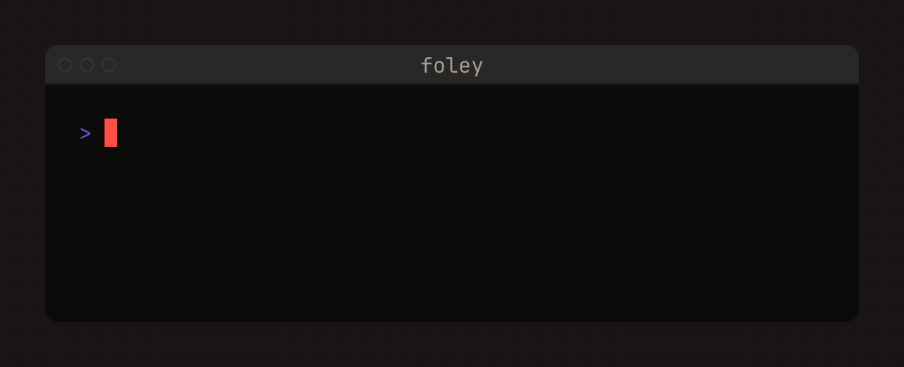
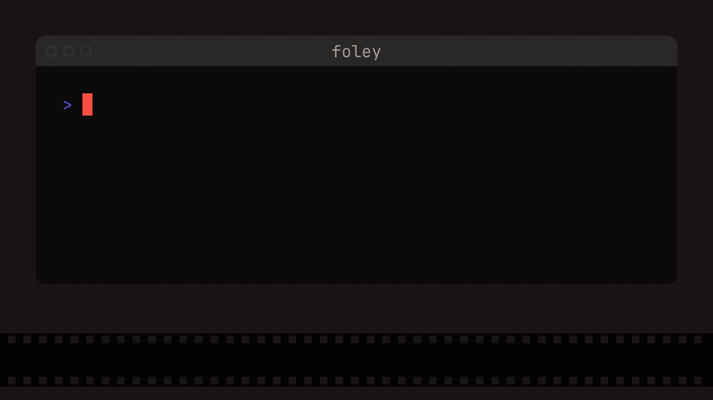
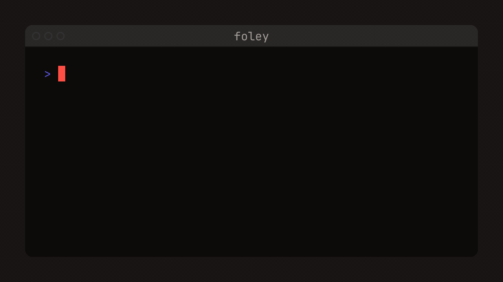
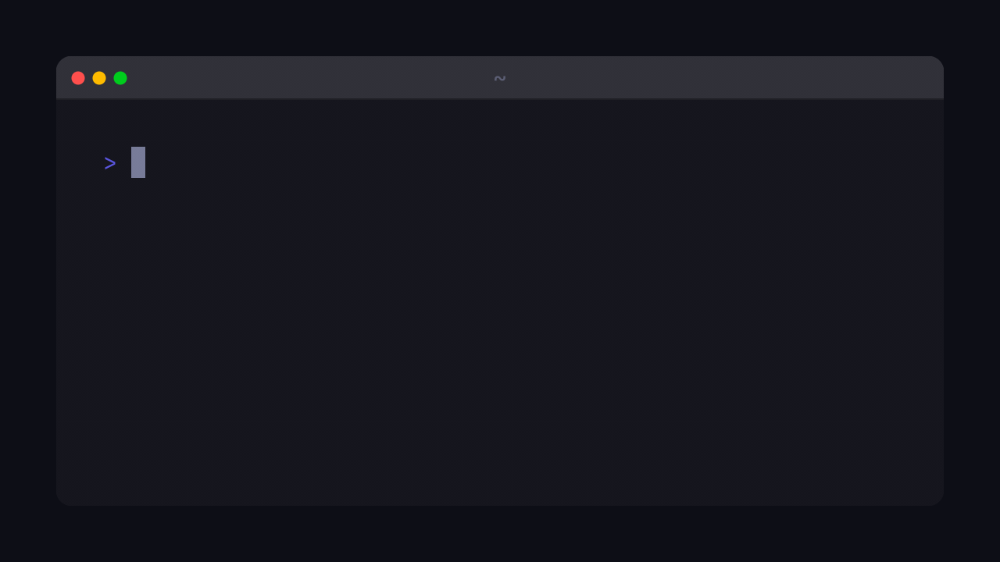

TitlesCUE 01
Title cards and lower thirds, composited on frame.
The tape is the recording. foley adds the post-production —
camera, titles, sound. The footage is never touched.
The terminal exists only inside the renderer. Nothing asks for a screen-recording permission; no stray notification ever walks through a shot.
Your app runs on a real pty, an embedded terminal engine — libghostty-vt, the brain of Ghostty — keeps the screen, and foley draws every frame itself. Kitty graphics render byte-exactly, because the engine underneath is a real terminal's.
Every take renders from a supersampled master, so a camera is just arithmetic: the zoom is a 1:1 crop.
The clock is virtual: the same tape produces identical bytes on any machine, and renders faster than real time — a ~32-second script exports in under 5. Demos double as visual regression tests.
# foley: cues in the tape.
The pty, the timing and the terminal state stay exactly as recorded.Every take on this table is real output from the engine — not an illustration of the product, the product.
Title cards and lower thirds, composited on frame.

Point at the output; the frame dims around it.

foley presses the keys, so the track is emitted with exact timing — not captured and guessed at.

One cue builds a fresh HOME per take. Your machine stays off camera.

Chrome for the take — macOS, noir, or none at all.
Push onto a region, hold, pull back — easing included. Arithmetic, not pixels stretched after the fact.
Takes render headless anywhere CI runs, and the whole studio builds into a small container.
A virtual clock. Output is attributed to the step that caused it, every run of a tape produces identical bytes, and rendering runs faster than real time.
The wall clock, every byte captured as it happened — the clock a continuously animating TUI needs. Honest limits either way: waits synchronize against the real app, so they spend the time they spend.
The grammar is VHS's own, vendored from the pinned release. The upstream example corpus — all 106 tapes — parses and runs under conformance tests; where foley differs on purpose, it says so loudly at run time instead of silently drifting.
brew install GH-Jaider/foley/foley
Brings ffmpeg with it — the one thing foley needs at runtime.
tar xzf foley_*.tar.gz sudo mv foley /usr/local/bin/
Self-contained: engine and fonts baked in. Grab the tarball from the latest release.
foley new demo.tape foley validate demo.tape foley demo.tape
A starter tape, the spotting session, and the take. When in doubt,
foley doctor.
foley skill > .claude/skills/foley/SKILL.md # the whole grammar, in one file the binary carries